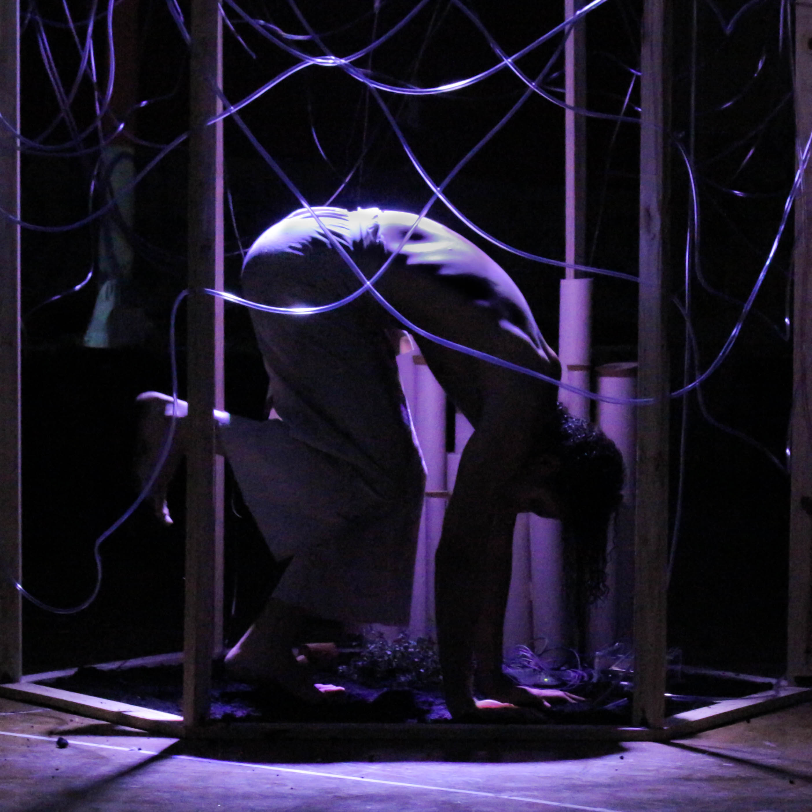
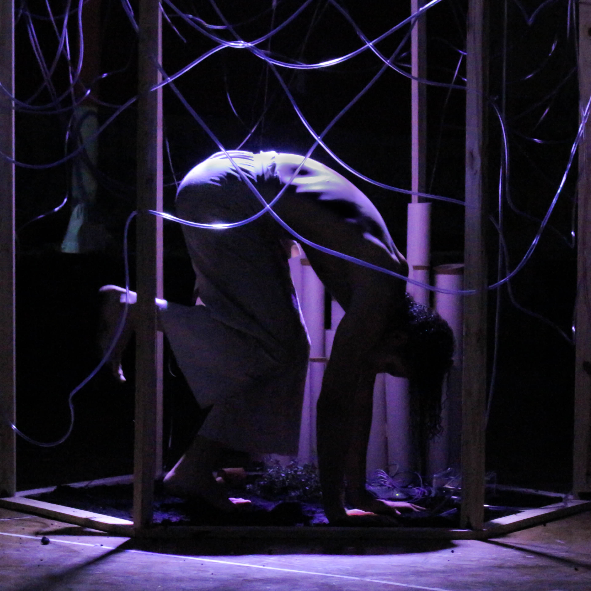

gui bullejos
multimedia artist [unesp]
architect and urbanist [usp]
studio manager [s&c]
são paulo/brazil
guibullejos@gmail.com
+55 11 998 665 892
micro-ecologies [2018]


The first decision was that at least one of them would contain water. The fluidity of the water accompanied by its appropriation of the space and sonority resulting from the movement are factors that have always touched me, bringing relaxation and memories. From this I began to compose the first installation that would focus on the movement and encounter between the body and the water, highlighting the lightness and firmness with which it flows. It is thus a source of inspiration for my thoughts, and also a reference to the way they flow: non-stop, conforming and following in all directions.
In order to complete the atmosphere of this space, I bring the coolness of the concrete to react with the warm body that moves inside the installation, here everything is smooth and fluid, the gray colors bring the sobriety and calm of a body-mind that longs for the peace and fluency. The stream of water falling from the cloud only fills this atmosphere with the sound that accompanies the water flow, controlled by the body that moves as the fluidity of the whole. Instinctively called City, because it is in her that I flow daily seeking my well-being and peace amid the urban chaos.
In order to complete the atmosphere of this space, I bring the coolness of the concrete to react with the warm body that moves inside the installation, here everything is smooth and fluid, the gray colors bring the sobriety and calm of a body-mind that longs for the peace and fluency. The stream of water falling from the cloud only fills this atmosphere with the sound that accompanies the water flow, controlled by the body that moves as the fluidity of the whole. Instinctively called City, because it is in her that I flow daily seeking my well-being and peace amid the urban chaos.


In contrast to the coolness and calmness of the City, the Prairie has brought warmth by remaking all those desires inspired by mental images that warm the heart and make the hands avid for realizing dreams. It says about rituals, manias that we often create and become intimate in order to reach our ideals. But before being a place of status and exaltation, it is a space of privacy, reserve. Delicate and often devoid of ostentation. For me, it is the space preserved in solitude (intimacy of the soul) that slowly builds its dreams delicately. In it there is the manual labor: the clay, the patches, the built altar that show the passion and persistence of a mind that vanishes, in the hope that its body finds the materialisation of its thought.
 

The Forest also emerges, inspired by the relationships we cultivate and that transform us by the echoes of the interactions between the bodies around us. Establishing relationships is not something simple, especially when superficiality reigns and hinders real understanding of the other. In my view, understanding relationships as incessant encounters of streams of information and vitality of parallel universes, composed of infinite and wonderful nuances ready to be discovered, makes the connections between bodies even more interesting. And although sometimes conflicting it is up to us to water and care for these relationships, keeping our ears wide open in order to distinguish the reverberations and compositions that they can add or subtract, thus regulating the intensity that touch us.


Finally, due to the time and resources for assembly, the mangrove appears. For me, the mangrove represents simplicity and fragility while ensuring diversity and density. In fact, almost a paradox, were it not for the fact that it makes it so peculiar. As an ecosystem, the mangrove is threatened by being so unique and fragile, it is at risk. However, as an ecosystem, it also has an infinite wealth of individuals inhabiting it, mainly because it functions as a natural "nursery" for several species. This facility could not get a better name. My imagination is my mangrove.
It is in her and through her that I dream and recreate my maps, it is where my diversity arises. Being able to build and rebuild me between instances of innocence and malice, beauty and ugliness, knowledge and ignorance. In this fragility of thoughts that come and go, dense in content, I am able to delight myself; seeking to protect them from the fleetingness that often haunts them, reserving them a special place, a cradle of ideas, threatened not only by volatility but also by incoherence. This delicacy deserves a place of peace and respite, where caution reigns and opens space for the imagination to give birth to the most diverse images that the maps construct. Be careful, calm down here.
It is in her and through her that I dream and recreate my maps, it is where my diversity arises. Being able to build and rebuild me between instances of innocence and malice, beauty and ugliness, knowledge and ignorance. In this fragility of thoughts that come and go, dense in content, I am able to delight myself; seeking to protect them from the fleetingness that often haunts them, reserving them a special place, a cradle of ideas, threatened not only by volatility but also by incoherence. This delicacy deserves a place of peace and respite, where caution reigns and opens space for the imagination to give birth to the most diverse images that the maps construct. Be careful, calm down here.
Final Graduation Project presented at Faculty of Architecture and Urbanism of University of São Paulo which was born from an extensive personal and scientific research about the spatial impacts in the identity formation process.